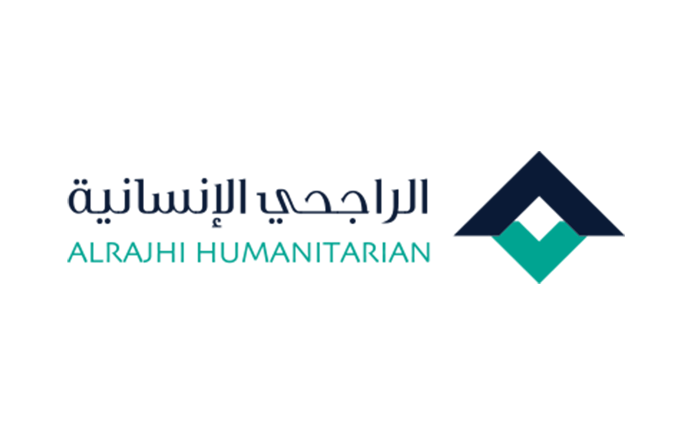

برنامج دعم شامل للجمعيات الناشئة يشمل التمويل والتدريب والإرشاد لتعزيز قدراتها المؤسسية وتحقيق أثر تنموي مستدام في المجتمع.
يهدف هذا البرنامج إلى تمكين المنظمات غير الربحية الناشئة من خلال تقديم حزمة دعم متكاملة تشمل التمويل المباشر والتدريب المتخصص والإرشاد المؤسسي. يسعى البرنامج لتعزيز القدرات التشغيلية والحوكمية للمنظمات المستفيدة، وتمكينها من تحقيق أثر تنموي مستدام في مجتمعاتها المحلية.
أن تكون المنظمة مسجلة رسمياً لدى المركز الوطني لتنمية القطاع غير الربحي
ألا يتجاوز عمر المنظمة 3 سنوات من تاريخ التأسيس
أن يكون لديها مجلس إدارة فعّال ومكتمل
أن تمتلك خطة عمل واضحة ومعتمدة
سجّل حساب جديد أو سجّل الدخول إلى حسابك الحالي
أكمل بيانات منظمتك الأساسية والمعلومات المطلوبة
أجب على أسئلة النموذج المخصصة لهذه الفرصة
ارفع جميع المستندات والوثائق المطلوبة
راجع طلبك بالكامل ثم اضغط على تقديم
ابدأ إعداد مشروعك عبر أدوات جزيل المتكاملة لزيادة فرص قبولك وتحقيق أعلى جودة ممكنة